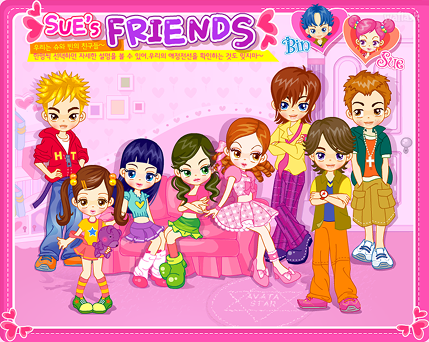
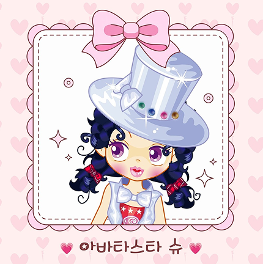
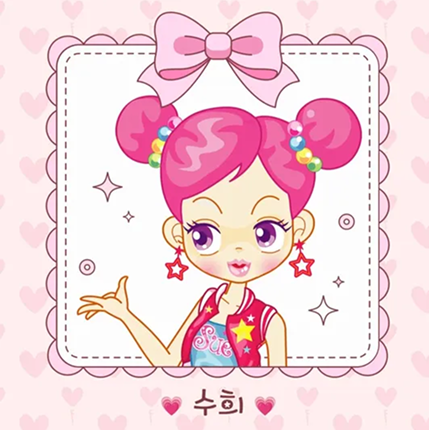
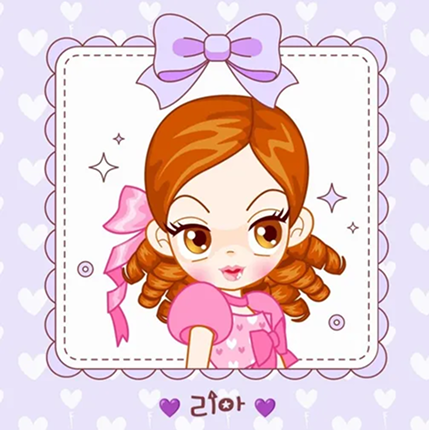
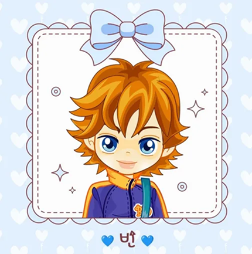
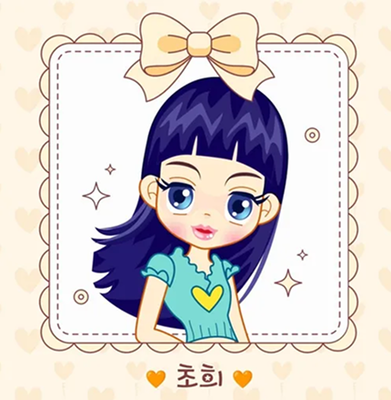
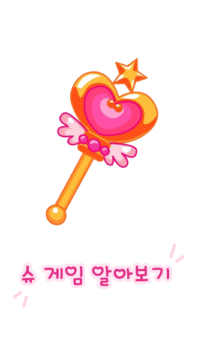

아바타 스타 슈
제작사: 해태제과
해태제과에서 운영하는 웹 콘텐츠 사이트 아이부라보에서 출시된 미디어 프랜차이즈. 아바타 스타인 '수희'가 주인공이며 정체를 숨기고 '슈'로 변신하여 연예인 생활을 하는 중에 방송국, 학교 등에서 겪는 여러 사건들이 주 내용이다.

정체：수희
좋아하는 색：핑크
애장품：요술봉
나는야 아바타스타～
550:1 경쟁률을 뚤고 데뷔한 인기 최고 아바타스타

생일 : ６월 ２１일
MBTI : ENFP
혈액형 : Ｂ형
밝고 명량한 성격
정체를 숨기고 아바타스타슈로
활동중이다。

생일 : ７월 ３１일
MBTI : ESTJ
혈액형 : A형
슈를 질투하는 새침대기 라이벌
겉으론 틱틱거려도 부끄럼쟁이 츤데레이다.

생일 : １２월 ２５일
MBTI : ENFJ
혈액형 : Ｏ형
슈의 남자친구
모두가 선망하는 미소년 인기남
으로、 슈의 팬이기도 하다.

생일 : 3월 13일
MBTI : INFJ
혈액형 : A형
슈의 베스트프렌드
조용하고 상냥한 성격으로,
수희의 정체를 알고 있다.
